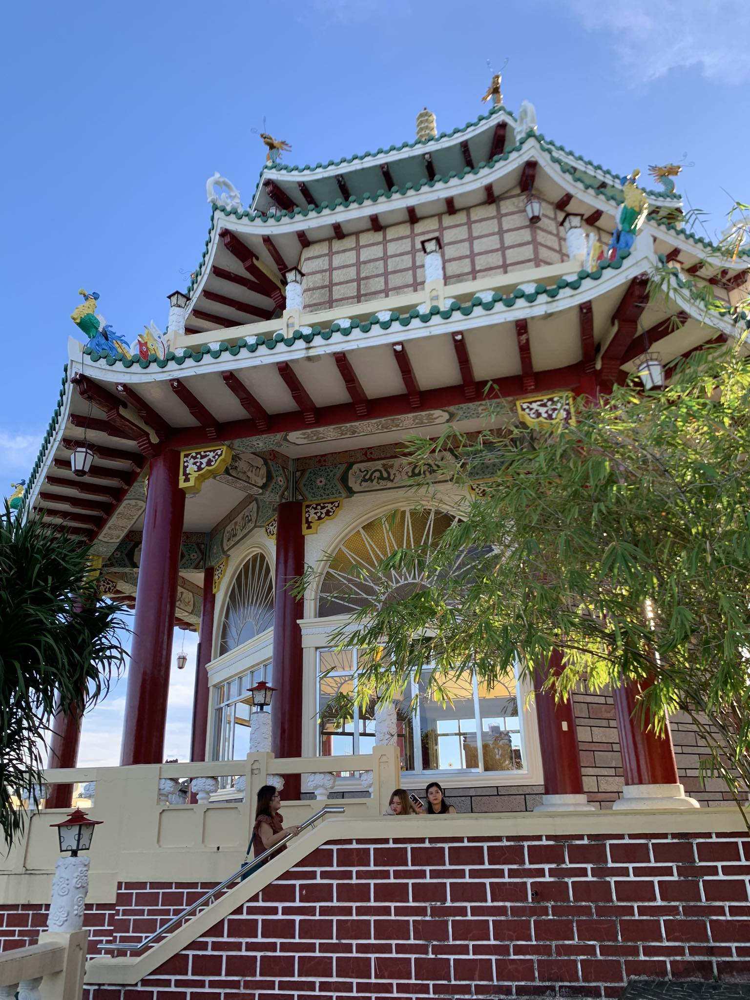

MY FOOD & ADVENTURE IN CEBU
by: Premacio, Ana Fe
KANDINGAN SA SRP
"Kandingan sa SRP" is a celebration of local culture and cuisine in Cebu, Philippines. This blog explores the vibrant and colorful atmosphere of the Sugbo Mercado in Cebu's South Road Properties (SRP), known for its lively atmosphere and delectable dishes. From mouthwatering Cebuano delicacies to diverse street food offerings, "Kandingan sa SRP" delves into the unique flavors, traditions, and experiences found in this bustling food market. Join us on a culinary journey through the sights, sounds, and tastes of Cebu's Kandingan sa SRP.
RED COCO TOWN

"Red Coco Town" is a pub and bar establishment in Cebu City, it might offer a unique ambiance, entertainment, drinks, or food options. Generally, pubs and bars in Cebu City can vary in themes, services, and offerings. So na ngari me kay among suwayan ni na eat all you can na sugba sugba and na amaze ko sa ka nice sa place bahalag hawg saka aso niya malingaw sad ka at the same time kay while ka kaon ka naa say ga banda sa imong atubangan og maka ingun ka na sulit ra for only 299 di naka mag mahay kay ang ilahang pork is marinated na asta ang chicken niya mga friendly sad ang mga trabahante adto pero ang naka hasul is kapoy sad siya paypay kay sugba baya maonang mo kaon ka gutmon sad ka HAHAHAH
Cebu Taoist Temple
The Taoist Temple is the center of worship for Taoism, the religion which follows the teachings of the ancient Chinese philosopher, Lao Zi. In the temple, devotees perform rituals. One ritual is where one prays to the gods to grant one’s wish. This kind of ritual includes washing hands, going inside the chapel barefoot and dropping two blocks of wood. If the blocks of wood are both face up upon reaching the floor, it means one can make a wish. If not, it means it is not yet time for one’s wish to be granted and needs to come back again to the temple some other time. Another ritual among the devotees is the climbing of its 181 steps, which represents the 81 chapters of Taoism scriptures, and lighting joss sticks and having their fortune be read by the monks. This kind of ritual is done during Wednesdays and Sundays.